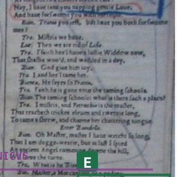
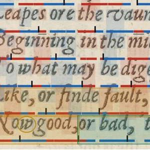

A daily record of progress on the Baconian ciphers. Each issue is one day's work, presented three ways: a public FAQ, a reference column of every source used, and an unrestrained technical colophon.
Newest first. Issues are superseded, never removed — a link sent today still resolves next year.


Part of New Gorhambury — the sources, the experiments, and the Word Cipher work.